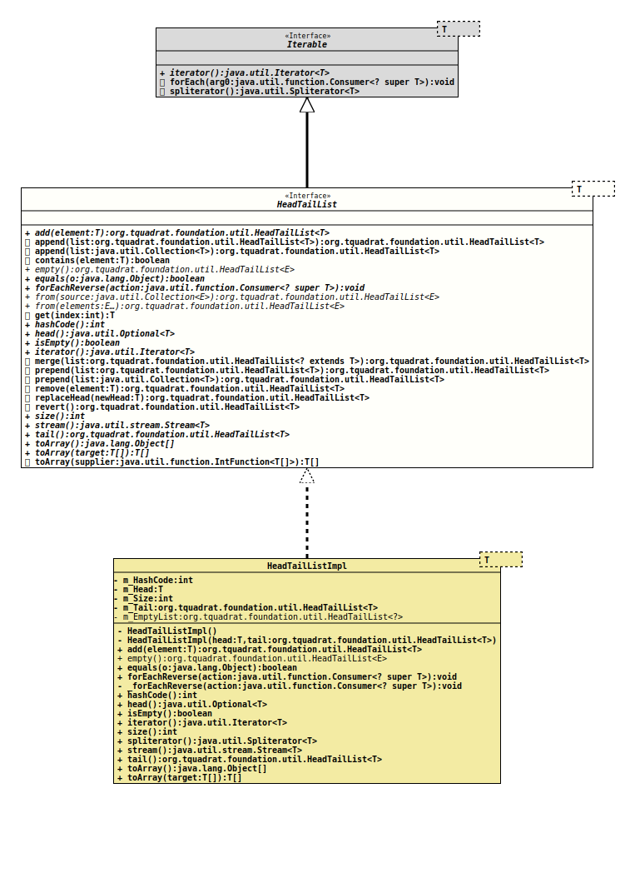

- Type Parameters:
T- The element type of the list.
- All Superinterfaces:
Iterable<T>
- All Known Implementing Classes:
HeadTailListImpl
A HeadTailList is an unmodifiable list data
structure.
Each modifying operation on it will create a new instance of the list, leaving the original list one unchanged.
But only the list itself is copied, not the entries in it – these are shared amongst all copies of the list. Consequently changes to the data stored in the list should be avoided.
To create a new instance of HeadTailList, call one of
empty()for an empty listfrom(Object[])to initialise the list with some elementsfrom(Collection)to initialise the new list from aCollection
- Author:
- Thomas Thrien (thomas.thrien@tquadrat.org)
- Version:
- $Id: HeadTailList.java 995 2022-01-23 01:09:35Z tquadrat $
- Since:
- 0.0.4
- UML Diagram
-

UML Diagram for "org.tquadrat.foundation.util.HeadTailList"
{kind=link}
-
Method Summary
Modifier and TypeMethodDescriptionReturns a new list with the given element as the head, and this list as the tail.default HeadTailList<T>append(Collection<T> list) Returns a new list where the given list is appended to the end of this list.default HeadTailList<T>append(HeadTailList<T> list) Returns a new list where the given list is appended to the end of this list.default booleanChecks whether the list contains an element that is equal to the given one.static <E> HeadTailList<E>empty()Returns an empty list.booleanvoidforEachReverse(Consumer<? super T> action) Does the same asIterable.forEach(Consumer), but starting with last element first.static <E> HeadTailList<E>from(E... elements) Creates a new list from the given elements.static <E> HeadTailList<E>from(Collection<E> source) Creates a new list from the givenCollection.default Tget(int index) Returns the element that is identified by the given indexinthashCode()head()Returns the head of the list.booleanisEmpty()Checks whether the list is empty.iterator()default HeadTailList<T>merge(HeadTailList<? extends T> list) Returns a new list where the given list is merged into this list.default HeadTailList<T>prepend(Collection<T> list) Returns a new list where the entries of the given list are placed before the first entry of this list.default HeadTailList<T>prepend(HeadTailList<T> list) Returns a new list where this list is appended to the end of the given list.default HeadTailList<T>Returns a copy of this list that does not contain the given element.default HeadTailList<T>replaceHead(T newHead) Returns a new copy of this list where the head element is replaced by the given element.default HeadTailList<T>revert()Revert the list; that means that the sequence of the elements in the new list is in reverse order that in this one.intsize()Returns the size of the list.stream()Returns aStreamthat is backed by this list.tail()Returns the tail of the list.Object[]toArray()Returns the contents of this list as an array.default T[]toArray(IntFunction<T[]> supplier) Returns the contents of this list in array that is provided by the given supplier.T[]Returns the contents of this list in the provided array.Methods inherited from interface java.lang.Iterable
forEach, spliterator
-
Method Details
-
add
Returns a new list with the given element as the head, and this list as the tail.- Parameters:
element- The head for the new list.- Returns:
- The new list.
-
append
Returns a new list where the given list is appended to the end of this list.- Parameters:
list- The list to append.- Returns:
- The new list.
-
append
Returns a new list where the given list is appended to the end of this list.- Parameters:
list- The list to append.- Returns:
- The new list.
-
contains
Checks whether the list contains an element that is equal to the given one.- Parameters:
element- The element to look for.- Returns:
trueif the element is in the list,falseotherwise.
-
empty
Returns an empty list.
Each call to this method will return the same instance.
- Type Parameters:
E- The element type for the list.- Returns:
- The empty list.
-
equals
-
forEachReverse
Does the same asIterable.forEach(Consumer), but starting with last element first.- Parameters:
action- The action to perform.
-
from
Creates a new list from the givenCollection.- Type Parameters:
E- The element type for the list.- Parameters:
source- The collection.- Returns:
- The new list.
-
from
Creates a new list from the given elements.- Type Parameters:
E- The element type for the list.- Parameters:
elements- The elements.- Returns:
- The new list.
-
get
Returns the element that is identified by the given index
The index is in reverse order of the insertion sequence; this means tha the element added first has the highest index value (
size() - 1).- Parameters:
index- The index for the wanted element; 0 indicates the head.- Returns:
- The element with the given index.
- Throws:
IndexOutOfBoundsException- The given index is out of the rangeindex < 0 || index >= size().
-
hashCode
int hashCode() -
head
Returns the head of the list.
This will be empty only for the empty list.
- Returns:
- An instance of
Optionalthat holds the head.
-
isEmpty
boolean isEmpty()Checks whether the list is empty.- Returns:
trueif the list is empty,falseotherwise.
-
iterator
-
merge
Returns a new list where the given list is merged into this list.
This means that each element from this list is followed by an element of the other list; if one list is shorter than the other one, the elements of the longer one will just be appended to the end of the new list.
- Parameters:
list- The list to merge into this one.- Returns:
- The new list.
-
prepend
Returns a new list where this list is appended to the end of the given list.- Parameters:
list- The list to prepend.- Returns:
- The new list.
-
prepend
Returns a new list where the entries of the given list are placed before the first entry of this list.- Parameters:
list- The list to prepend.- Returns:
- The new list.
-
remove
Returns a copy of this list that does not contain the given element.- Parameters:
element- The element to be removed.- Returns:
- The copy of the list.
-
replaceHead
Returns a new copy of this list where the head element is replaced by the given element.- Parameters:
newHead- The element that is the new head for the list.- Returns:
- The copy with the new head.
-
revert
Revert the list; that means that the sequence of the elements in the new list is in reverse order that in this one.- Returns:
- The new list with the reverted order of the elements.
-
size
int size()Returns the size of the list.- Returns:
- The size of the list.
-
stream
Returns aStreamthat is backed by this list.- Returns:
- The stream.
-
tail
HeadTailList<T> tail()Returns the tail of the list.- Returns:
- The tail list.
-
toArray
Returns the contents of this list as an array.- Returns:
- The array.
-
toArray
Returns the contents of this list in the provided array.
If the provided array is larger that the number of elements on the stack, the exceeding entries on that array remained unchanged.
- Parameters:
target- The target array; if this array has an insufficient size, a new array will be created.- Returns:
- An array with all entries from the list; never
null. If the provided array was large enough to take all elements, it will be returned, otherwise the returned array is a new one and the provided array is unchanged.
-
toArray
Returns the contents of this list in array that is provided by the given supplier.
If the provided array is larger that the number of elements on the stack, the exceeding entries on that array remained unchanged.
If the array is too small, a new array will be created.
- Parameters:
supplier- The supplier for the target array.- Returns:
- An array with all entries on the stack; never
null. If the provided array was large enough to take all elements, it will be returned, otherwise the returned array is a new one and the provided array is unchanged.
-